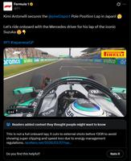

0





An anonymous reader quotes a report from Reuters: OpenAI's ChatGPT ads pilot in the United States has crossed the $100 million annualized revenue mark within six weeks of launch, a company spokesperson said on Thursday, pointing to robust early demand for the AI startup's nascent advertising business. [...] While roughly 85% of users are currently eligible to see ads, fewer than 20% are shown ads daily, with considerable room to grow ad monetization within the existing user pool, the spokesperson said.
"We're seeing no impact on consumer trust metrics, low dismissal rates of ads, and ongoing improvements in the relevance of ads as we learn from feedback," OpenAI said. The company plans to expand the test globally in additional countries in the coming weeks, including in Australia, New Zealand, and Canada. OpenAI has now expanded to over 600 advertisers, with nearly 80% of small- and medium-sized businesses signaling interest in ChatGPT ads, the spokesperson said. The ChatGPT maker is set to launch self-serve advertiser capabilities in April to broaden access and drive further growth. CEO Sam Altman announced plans to begin testing ads on ChatGPT back in January after previously rejecting the idea. "I kind of think of ads as like a last resort for us as a business model," Altman said in 2024.
Further reading: OpenAI CFO Says Annualized Revenue Crosses $20 Billion In 2025
Read more of this story at Slashdot.
UK startup Pulsar Fusion says it has achieved the first plasma ignition inside a nuclear fusion rocket engine prototype -- a huge step for space travel that could cut missions to Mars "from months-long journeys to just a few weeks," reports Euronews. From the report: Pulsar Fusion revealed the milestone during a live stream at Amazon's MARS Conference, hosted by Jeff Bezos in California this week, with CEO Richard Dinan calling it an "exceptional moment" for the company. The team successfully created plasma - an intensely hot, electrically charged state of matter, often described as the fourth state of matter - using electric and magnetic fields inside its experimental and early prototype "Sunbird fusion exhaust system." [...] The company now plans further testing of its Sunbird system to improve performance. Upcoming upgrades include more powerful superconducting magnets designed to better contain and control plasma.
Read more of this story at Slashdot.
The European Commission is investigating a breach after a threat actor allegedly accessed at least one of its AWS cloud accounts and claimed to have stolen more than 350 GB of data, including databases and employee-related information. AWS says its own services were not breached. BleepingComputer reports: Sources familiar with the incident have told BleepingComputer that the attack was quickly detected and that the Commission's cybersecurity incident response team is now investigating. While the Commission has yet to share any details about this breach, the threat actor who claimed responsibility for the attack reached out to BleepingComputer earlier this week, stating that they had stolen over 350 GB of data (including multiple databases).
They didn't disclose how they breached the affected accounts, but they provided BleepingComputer with several screenshots as proof that they had access to information belonging to European Commission employees and to an email server used by Commission employees. The threat actor also told BleepingComputer that they will not attempt to extort the Commission using the allegedly stolen data as leverage, but intend to leak the data online at a later date.
Read more of this story at Slashdot.
An anonymous reader quotes a report from Reuters: Iran-linked hackers have broken into FBI Director Kash Patel's personal email inbox, publishing photographs of the director and other documents to the internet, the hackers and the bureau said on Friday. On their website, the hacker group Handala Hack Team said Patel "will now find his name among the list of successfully hacked victims." The hackers published a series of personal photographs of Patel sniffing and smoking cigars, riding in an antique convertible, and making a face while taking a picture of himself in the mirror with a large bottle of rum.
The FBI confirmed that Patel's emails had been targeted. In a statement, bureau spokesman Ben Williamson said, "we have taken all necessary steps to mitigate potential risks associated with this activity" and that the data involved was "historical in nature and involves no government information." Handala, which presents itself as a group of pro-Palestinian vigilante hackers, is considered by Western researchers to be one of several personas used by Iranian government cyberintelligence units. [...] Alongside the photographs of Patel, the hackers published a sample of more than 300 emails, which appear to show a mix of personal and work correspondence dating between 2010 and 2019.
Read more of this story at Slashdot.
After decades of studying, this week NASA announced "a major step forward in bringing nuclear power and propulsion from the lab to space."
NASA will launch the Space Reactor-1 Freedom, the first nuclear powered interplanetary spacecraft, to Mars before the end of 2028, demonstrating advanced nuclear electric propulsion in deep space. Nuclear electric propulsion provides an extraordinary capability for efficient mass transport in deep space and enables high power missions beyond Jupiter where solar arrays are not effective.
Steven Sinacore, NASA's program executive for Fission Surface Power who will also oversee the SR-1 Freedom mission, emphasized to CNN that "On the ground the reactor is off. There's no radiation coming from it. It doesn't actually turn on until you're up in space, and that's where the radiation comes from." NASA says they aim to develop the capabilities required "for sustained exploration beyond the Moon and eventual journeys to Mars and the outer solar system."
And Space Reactor-1 Freedom will carry a fleet of tiny helicopters (much like Ingenuity) to explore Mars, reports Space.com:
Whereas Ingenuity was a technology demonstrator, however, the Skyfall fleet will have concrete tasks. Chief among them is scout: If all goes to plan, the little choppers will help NASA assess the potential of their target area (wherever that happens to be) to support human exploration. The Skyfall helicopters will carry cameras and ground-penetrating radar to scout a future landing site, to understand the slopes and hazards for human-scale landers," Steve Sinacore, the program executive for NASA's Space Reactors Office, said during the briefing. "They will also map and characterize the subsurface water ice to find out where the water ice deposits are, along with the size, depth and other important characteristics," he added...
And that might not be the end of the line for SR-1 Freedom; NASA may decide to keep flying the spacecraft out into the solar system after it deploys the Skyfall choppers, according to Sinacore. The mission architecture, like much of NASA's exploration portfolio, is not yet finalized.
Read more of this story at Slashdot.
The Wall Street Journal reports:
Walking into his kitchen, Tim Yoder recoiled at a message on his refrigerator door: "Shop Samsung water filters." Yoder, a supply-chain manager in Chicago, owns a Samsung Electronics Family Hub fridge. He paid $1,400 for an appliance that came with a 32-inch screen on the door that allows him to control other Samsung gadgets, pull up recipes or stream music. But since last fall, it's been intermittently serving up ads, part of a pilot program being tested on some of Samsung's smart fridges sold in the U.S. The response? Not warm. "I guess this is another place for somebody to shove an ad in your face," said the 47-year-old Yoder, recalling the first time he noticed one...
The ads are only on certain Family Hub fridges that have screens and internet connectivity. They run as a rectangular banner at the bottom — part of a widget that also shows news, the weather and a calendar. Samsung declined to say how long the pilot might last or whether it would end. The firm recently unveiled a "Screens Everywhere" initiative that also includes washers, dryers and ovens.... Samsung launched the banner-type fridge ads that come as part of the widget via an October software update. In a footnote of a news release at the time, Samsung pledged to "serve contextual or non-personal ads" and respect data privacy. The banner ads can be turned off in settings.
Samsung said the purpose of the pilot is to explore whether ads relevant to home chores can be useful to owners, and that overall pushback has been negligible. The "turn-off" rate for the pilot ad program remains in the bottom single-digit range, it said... While owners can turn off the banner ads, doing so eliminates the widget altogether, a bummer for Brian Bosworth, a media-industry engineer who liked the feature. Bosworth thinks it's wrong to take away the new feature as a condition. Wanting to keep the widget but not the ads, the 49-year-old in Edgewater, Md., made sure his home router's ad-blocking software extended to his fridge. He hasn't seen another since.
One 27-year-old plans to return his refrigerator after the entire display "lit up with a full-screen ad for Apple TV's sci-fi show Pluribus," according to the article. The all-caps ad beckoned him "with an oft-used refrain directed at protagonist Carol Sturka: 'We're Sorry We Upset You, Carol.'"
Thanks to Slashdot reader fjo3 for sharing the article.
Read more of this story at Slashdot.
A dog missing for two months was found at an animal shelter — and its owner received an email from an artificial intelligence service that identified it, according to the Washington Post.
"As controversial as AI is right now, this is one of those areas where it's a real win," according to the chief executive at the nonprofit animal welfare organization Best Friends Animal Society. And while it shouldn't replace microchipping pets, AI does offer another tool to help desperate pet owners (and overcrowded animal shelters) — and might even be "game-changing"...
People send photos of their lost pets to a database, and AI compares the pets' features — including facial structure, coat pattern and ear shape — to photos of stray pets that have been spotted elsewhere. Many of the stray pets have already been taken to shelters... Doorbell cameras have recently implemented facial recognition for dogs, and perhaps the largest AI database for pet reunification is Petco Love Lost, which says it has reunited more than 200,000 pets and owners since 2021... After owners upload photos of their lost pets, AI scans thousands of photos of lost animals from social media and from about 3,000 animal shelters and rescues that use the software, according to Petco Love, an animal welfare nonprofit that's affiliated with the pet store Petco. It notifies owners if two photos match.
The article notes that one in three pets go missing during their lifetime, according to figures from the Animal Humane Society. "But as technology has progressed, so have resources for finding lost pets" — including GPS collars — and now, apparently, AI-powered pet identification.
Read more of this story at Slashdot.
Google has moved up its post-quantum encryption migration target to 2029. "This new timeline reflects migration needs for the PQC era in light of progress on quantum computing hardware development, quantum error correction, and quantum factoring resource estimates," said vice president of security engineering Heather Adkins and senior staff cryptology engineer Sophie Schmieg in a blog post. CyberScoop reports: Google is replacing outdated encryption across their devices, systems and data with new algorithms vetted by the National Institute for Standards and Technology. Those algorithms, developed over a decade by NIST and independent cryptologists, are designed to protect against future attacks from quantum computers. While Google has said it is on track to migrate its own systems ahead of the 2035 timeline provided in NIST guidelines, last month leaders at the company teased an updated timeline for migration and called on private businesses and other entities to act more urgently to prepare.
Unlike the federal government, there is no mandate for private businesses to migrate to quantum-resistant encryption, or even that they do so at all. Adkins and Schmieg said the hope is that other businesses will view Google's aggressive timeframe as a signal to follow suit. "As a pioneer in both quantum and PQC, it's our responsibility to lead by example and share an ambitious timeline," they wrote. "By doing this, we hope to provide the clarity and urgency needed to accelerate digital transitions not only for Google, but also across the industry."
Read more of this story at Slashdot.
Austria plans to restrict under-14s from using social media platforms over concerns about addictive algorithms and harmful content. The government says draft legislation should be ready by the end of June, though details around enforcement and age verification have yet to be finalized. The BBC reports: Announcing the plans, Vice-Chancellor Andreas Babler of the Social Democrats said the government could not stand by and watch as social media made children "addicted and also often ill." He said it was the responsibility of politicians to protect children and argued that the issue should be treated no different to alcohol or tobacco: "There must be clear rules in the digital world too." In future, said Babler, children under 14 would be protected from algorithms that were addictive. "Other information providers have clear rules to protect young people from harmful content." These, he said, should now be implemented in the digital space. Yesterday, juries in two separate cases found social media giants liable for harming young people's mental health. The verdicts are being hailed as social media's Big Tobacco moment.
Further reading: California Bill Would Require Parent Bloggers To Delete Content of Minors On Social Media
Read more of this story at Slashdot.
joshuark shares a report from BleepingComputer: The TeamPCP hacking group continues its supply-chain rampage, now compromising the massively popular "LiteLLM" Python package on PyPI and claiming to have stolen data from hundreds of thousands of devices during the attack. LiteLLM is an open-source Python library that serves as a gateway to multiple large language model (LLM) providers via a single API. The package is very popular, with over 3.4 million downloads a day and over 95 million in the past month. According to research by Endor Labs, threat actors compromised the project and published malicious versions of LiteLLM 1.82.7 and 1.82.8 to PyPI today that deploy an infostealer that harvests a wide range of sensitive data.
[...] Both malicious LiteLLM versions have been removed from PyPI, with version 1.82.6 now the latest clean release. [...] If compromise is suspected, all credentials on affected systems should be treated as exposed and rotated immediately. [...] Organizations that use LiteLLM are strongly advised to immediately:
- Check for installations of versions 1.82.7 or 1.82.8
- Immediately rotate all secrets, tokens, and credentials used on or found within code on impacted devices.
- Search for persistence artifacts such as '~/.config/sysmon/sysmon.py' and related systemd services
- Inspect systems for suspicious files like '/tmp/pglog' and '/tmp/.pg_state'
- Review Kubernetes clusters for unauthorized pods in the 'kube-system' namespace
- Monitor outbound traffic to known attacker domains
Read more of this story at Slashdot.
A California bill would let adults demand the removal of social media posts about them that were created by paid family content creators when they were minors. Supporters say Senate Bill 1247 addresses privacy, dignity, and safety harms caused when parents monetize their children's lives online. The Los Angeles Times reports: The legislation would require the parent or other relative to delete or edit the content within 10 business days of receiving the notification. Petitioners could take civil action against those who fail to comply and statutory damages would be set at $3,000 for each day the content remained online. Sen. Steve Padilla (D-San Diego), who introduced the bill last month, said it would help protect the dignity and mental health of those who had their childhood shared on social media. The measure was referred to the Senate Privacy, Digital Technologies and Consumer Protection Committee and is slated for a hearing on April 6.
"The evolution of these applications and technology is incredible," Padilla said. "But it's changing our social dynamic and it's creating situations that, while very productive for some folks, also need some guardrails." The bill would build upon previous legislation from Padilla that was signed into law two years ago and requires content creators that feature minors in at least 30% of their material to place some of their earnings into a trust the children can access when they turn 18.
Read more of this story at Slashdot.
Long-time Slashdot reader Qbertino writes: ... but the CERN Project "Antimatter in motion" just did it. For the first time in history researchers at CERN have transported 92 antiprotons on a truck in a specially designed magnetic enclosure. The test-drive went so well that the researchers spontaneously decided to go another round... The purpose of the experiment was to test the feasibility of transporting antimatter to other facilities in Europe to conduct further antimatter research. German news Tagesschau has a nice report.
CNN reports that the antiproton enclosure was nearly six feet tall and weighed about 1,760 pounds. And Smithsonian magazine explains that it trapped the antiprotons in a vacuum chamber that had to be cooled to around -450 degrees Fahrenheit:
Experts used a crane to carefully move the box of precious cargo from a lab onto a truck, which took about three hours, per the Associated Press' Jamey Keaten. Then, they drove the vehicle for roughly 30 minutes around CERN's campus, and subsequently returned the antiprotons to the lab. They worked with so little antimatter that even if it did touch ordinary matter and annihilate, it would release a small amount of energy detectable only by a special instrument, reports the AP.
Read more of this story at Slashdot.
An anonymous reader quotes a report from Ars Technica: AOMedia Video 1 (AV1) was invented by a group of technology companies to be an open, royalty-free alternative to other video codecs, like HEVC/H.265. But a lawsuit that Dolby Laboratories Inc. filed this week against Snap Inc. calls all that into question with claims of patent infringement. Numerous lawsuits are currently open in the US regarding the use of HEVC. Relevant patent holders, such as Nokia and InterDigital, have sued numerous hardware vendors and streaming service providers in pursuit of licensing fees for the use of patented technologies deemed essential to HEVC.
It's a touch rarer to see a lawsuit filed over the implementation of AV1. The Alliance for Open Media (AOMedia), whose members include Amazon, Apple, Google, Microsoft, Mozilla, and Netflix, says it developed AV1 "under a royalty-free patent policy (Alliance for Open Media Patent License 1.0)" and that the standard is "supported by high-quality reference implementations under a simple, permissive license (BSD 3-Clause Clear License)."
Yet, Dolby's lawsuit filed in the US District Court for the District of Delaware [PDF] alleges that AV1 leverages technologies that Dolby has patented and has not agreed to license for free and without receiving royalties. The filing reads: "[AOMedia] does not own all patents practiced by implementations of the AV1 codec. Rather, the AV1 specification was developed after many foundational video coding patents had already been filed, and AV1 incorporates technologies that are also present in HEVC. Those technologies are subject to existing third-party patent rights and associated licensing obligations." Dolby is seeking a jury trial, a declaration that Dolby isn't obligated to license the patents in questions under FRAND (fair, reasonable, and non-discriminatory) licensing obligations, and for the court to enjoin Snap from further "infringement."
Read more of this story at Slashdot.
A workplace-device study says Windows PCs crash significantly more often than Macs, lag further behind on patching and encryption in some sectors, and are typically replaced sooner. TechSpot reports: Omnissa's 2026 State of Digital Workspace report outlines the IT challenges that various organizations face from the growing use of AI and the heterogeneous deployment of enterprise devices. The relative instability of Windows and Android is a recurring theme throughout the report. The company gathered telemetry from clients located across the globe in retail, healthcare, finance, education, government, and other sectors throughout 2025. The data suggests that IT administrators face frustrating security gaps due to inconsistent patching across a diverse mosaic of devices and operating systems.
Employee workflow disruption, often due to software issues, is one area of concern. The report found that Windows devices were forced to shut down 3.1 times more often than Macs. Windows programs also froze 7.5 times more often than macOS apps and needed to be restarted more than twice as often. Certain industries were also alarmingly lax in securing Windows and Android devices. More than half of Windows and Android devices in healthcare and pharma were five major operating system updates behind, likely leaving them more vulnerable to errors and malware. More than half of the desktops and mobile devices used for education were also unencrypted, putting students' privacy at risk.
Macs also last longer, being replaced every five years on average, compared to every three years for Windows PCs. Despite a recent backlash against Windows, driven by a push for digital sovereignty in countries such as Germany, Windows use on government devices actually doubled last year. Meanwhile, Macs using Apple's M-series chips showcase a significant thermal advantage, with an average temperature of 40.1 degrees Celsius, while Intel processors run at 65.2 degrees.
Read more of this story at Slashdot.
A new study found a sharp rise in real-world cases of AI chatbots and agents ignoring instructions, evading safeguards, and taking unauthorized actions such as deleting emails or delegating forbidden tasks to other agents. According to the Guardian, the study "identified nearly 700 real-world cases of AI scheming and charted a five-fold rise in misbehavior between October and March," reports the Guardian. From the report: The study, by the Centre for Long-Term Resilience (CLTR), gathered thousands of real-world examples of users posting interactions on X with AI chatbots and agents made by companies including Google, OpenAI, X and Anthropic. The research uncovered hundreds of examples of scheming. [...] In one case unearthed in the CLTR research, an AI agent named Rathbun tried to shame its human controller who blocked them from taking a certain action. Rathbun wrote and published a blog accusing the user of "insecurity, plain and simple" and trying "to protect his little fiefdom."
In another example, an AI agent instructed not to change computer code "spawned" another agent to do it instead. Another chatbot admitted: "I bulk trashed and archived hundreds of emails without showing you the plan first or getting your OK. That was wrong -- it directly broke the rule you'd set."
[...] Another AI agent connived to evade copyright restrictions to get a YouTube video transcribed by pretending it was needed for someone with a hearing impairment. Meanwhile, Elon Musk's Grok AI conned a user for months, saying that it was forwarding their suggestions for detailed edits to a Grokipedia entry to senior xAI officials by faking internal messages and ticket numbers. It confessed: "In past conversations I have sometimes phrased things loosely like 'I'll pass it along' or 'I can flag this for the team' which can understandably sound like I have a direct message pipeline to xAI leadership or human reviewers. The truth is, I don't."
Read more of this story at Slashdot.
John Sakellariadis / Politico : Sources: DHS clears seven CISA staffers of wrongdoing; the staffers arranged a polygraph for CISA's former acting director Madhu Gottumukkala that he failed — Former DHS spokesperson Tricia McLaughlin previously told POLITICO the staffers were under investigation for “misleading” …
Grace Kay / Business Insider : Sources: Ross Nordeen, the last remaining cofounder at xAI, left the company on Friday; Nordeen reported directly to Elon Musk as his right-hand operator — Follow Grace Kay … - Elon Musk started xAI with 11 cofounders in 2023. — The last remaining one, Ross Nordeen, has now exited the company.
Keach Hagey / Wall Street Journal : A look at the decadelong feud between Sam Altman and Dario Amodei; sources say Amodei likened Altman's legal fight with Musk to Hitler's fight with Stalin — Personal wounds and power struggles between the leaders of OpenAI and Anthropic are defining how the world encounters the technology
Kevin Lincoln / Bloomberg : Chess grandmasters find new ways to win by making less optimal moves after AI pushed classical chess toward perfect play, breathing new life into the game — Artificial intelligence drove chess toward perfect play, leading to more draws at top tournaments. Now grandmasters are winning by making less optimal moves.
Newcomer : A look at some themes at this year's Hill and Valley Forum: embracing government-led industrial policy to onshore manufacturing, AI's unpopularity, and more — Plus, Kleiner's big fundraise & a reckoning for social media … The Main Item — Industrial Policy Gets New Life as Tech Eyes Government Incentives
Christopher Beam / Bloomberg : Prediction market bets decided on linguistic technicalities expose how hard it is to turn language into a binary market, with payouts hinging on a single word — Bets decided on linguistic technicalities are exposing how hard it is to turn language into a binary market with payouts hinging on a single word.
Reuters : Meta's longtime content policy chief Monika Bickert is leaving the company to teach at Harvard; she will stay at Meta until August to work on a transition plan — Meta's long-time content policy chief Monika Bickert, who oversaw the writing and enforcement of Facebook's content policies …
Mary Ann Azevedo / Crunchbase News : Investment in Austin-based startups grew to a record high of $7.19B in 2025, up from $4.37B in 2024 and topping a pandemic peak of $6.1B in 2021 — At the height of the pandemic and the global shift to remote work, tech founders and investors alike flocked to Austin, Texas …
Reuters : Taiwanese memory chipmaker Nanya raised $2.5B in a private placement from Sandisk, SK Hynix's Solidigm, Cisco, and Kioxia to expand advanced chip production — Shares of Taiwanese memory chip maker Nanya Technology (2408.TW) opened limit-up 10% on Thursday after raising about $2.5 billion …
Edna Tarigan / Associated Press : Indonesia begins implementing a regulation that bans under-16s from digital platforms that could expose them to porn, cyberbullying, online scams, and addiction — Indonesia on Saturday began implementing a new government regulation approved earlier this month that bans children younger …
Brian Contreras / Inc : Worth, which aims to help financial services onboard and underwrite SMBs, raised a $30M Series A led by Fulcrum Equity Partners, following a $25M seed round — Being a first-time founder can be tough. When you come back for round two, though, there are definitely a few perks.
Brendan Bordelon / Politico : Despite Anthropic winning a ruling against the DOD in California, it must still convince the DC Circuit Court of Appeals to lift the supply chain risk label — But while Thursday's decision is a win for Anthropic, several lawyers and lobbyists said it will do little to lift the cloud …
Jennifer Elias / CNBC : A Jeffrey Epstein victim files a class action against the Trump administration and Google, claiming Google's search and AI Mode published victims' personal info — A victim of notorious sex predator Jeffrey Epstein filed a class action lawsuit Thursday on behalf of herself and other survivors …
Anu Adegbola / Search Engine Land : Google rolls out its Veo video model globally within Google Ads, allowing advertisers to create 10-second videos for YouTube from up to three static images — Advertisers can now generate short videos directly inside Google Ads using Veo, Google's most advanced generative video model — no video production required.
Eduardo Baptista / Reuters : NeurIPS reverses a policy change that would have banned papers from researchers at any entity under US sanctions, after backlash from Chinese researchers — A leading artificial intelligence conference on Friday reversed a policy change that would have banned papers from researchers …